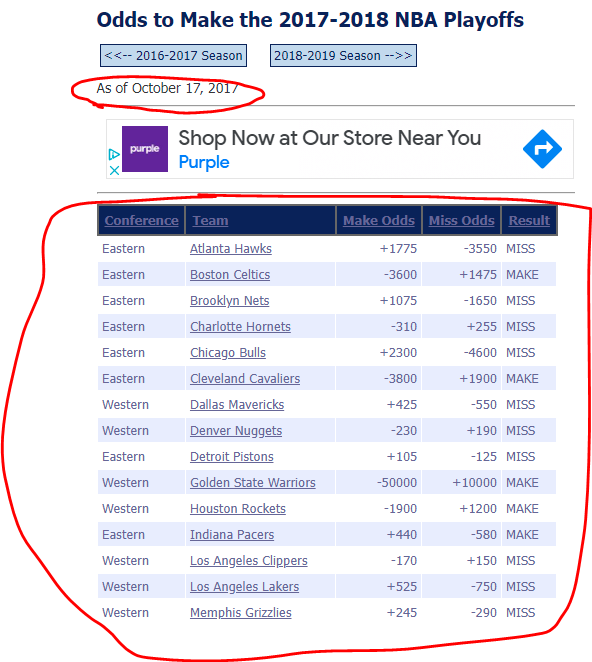

Data Prep
Scraping Betting Markets
I scraped historical betting lines and which teams actually made the playoffs each season from the “Archived NBA Futures Odds” section of Sports Odds History5. The Sports Odds History website is constructed in a way that makes it relatively straight-forward to scrape the requisite information.

The webpage for each season has a (mostly) consistent table structure and associated date of archive.

Each season has a consistent URL (with only the season year changing).

Steps
- Create table with URL’s to scrape
- For each URL repeat steps 3 to 6
- Scrape table containing Teams, betting odds, and outcomes6
- Convert from payouts to odds (e.g. +400 becomes 0.25)
- Tables contain the betting odds of both “making the playoffs” and “missing the playoffs”7. I took the average of the implied odds of making the playoffs between both columns (“make” and inverse of “miss”). This might be generous to the betting markets but likely gets at a closer estimate of where they actually expect the odds to be.
- Scrape date archived and join to table
- Bind data from all scraped pages / seasons together
- Convert from odds to probability (e.g. 4:1 becomes 80%)
Load packages and helper functions
# Load packages
library(tidyverse)
library(rvest)
library(gt)
library(broom)
# Helper functions
# Some of the tables had the lines represented as character strings like "+400"
# "-300". This converts those to a numeric type (if they're not already).
odds_to_numeric <- function(x){
if(is.numeric(x)) return(x)
sign <- str_sub(x, 1, 1)
sign <- case_when(sign == "-" ~ -1,
sign == "+" ~ 1)
x_dbl <- str_sub(x, 2) %>% as.double()
x_dbl * sign
}
# -400 would be converted to 4, +400 to 0.25
line_to_odds <- function(x){
positive <- sign(x) == 1
abs_x <- abs(x)
case_when(positive ~ 100 / abs_x ,
!positive ~ abs_x / 100)
}
odds_to_prob <- function(odds){
odds / (1 + odds)
}I’ve labeled each respective # step in the code sections below.
Step 1
# step 1
scrape_urls <- tibble(start_yr = 2014:2020, end_yr = 2015:2021) %>%
mutate(yr = paste0(start_yr, "-", end_yr),
urls = glue::glue(
"https://www.sportsoddshistory.com/nba-win/?y={yr}&sa=nba&t=post&o=s",
yr = yr
))
scrape_urls %>%
gt::gt()| start_yr | end_yr | yr | urls |
|---|---|---|---|
| 2014 | 2015 | 2014-2015 | https://www.sportsoddshistory.com/nba-win/?y=2014-2015&sa=nba&t=post&o=s |
| 2015 | 2016 | 2015-2016 | https://www.sportsoddshistory.com/nba-win/?y=2015-2016&sa=nba&t=post&o=s |
| 2016 | 2017 | 2016-2017 | https://www.sportsoddshistory.com/nba-win/?y=2016-2017&sa=nba&t=post&o=s |
| 2017 | 2018 | 2017-2018 | https://www.sportsoddshistory.com/nba-win/?y=2017-2018&sa=nba&t=post&o=s |
| 2018 | 2019 | 2018-2019 | https://www.sportsoddshistory.com/nba-win/?y=2018-2019&sa=nba&t=post&o=s |
| 2019 | 2020 | 2019-2020 | https://www.sportsoddshistory.com/nba-win/?y=2019-2020&sa=nba&t=post&o=s |
| 2020 | 2021 | 2020-2021 | https://www.sportsoddshistory.com/nba-win/?y=2020-2021&sa=nba&t=post&o=s |
Steps 2-6
Custom scraping function:
scrape_nba_playoffs_odds <- function(url){
css_selector_tbl <- "#content > div > table.soh1"
html_page <- url %>%
read_html()
# step 3
data <- html_page %>%
html_element(css = css_selector_tbl) %>%
html_table() %>%
janitor::clean_names() %>%
mutate(
# step 4
across(contains("odds"),
list(dbl = ~odds_to_numeric(.x) %>%
line_to_odds())),
# step 5
make_odds_avg = (make_odds_dbl + 1 / miss_odds_dbl) / 2)
html_kids <- html_page %>%
html_element(css = "#content > div") %>%
html_children() %>%
html_text2()
# step 6
phrase_date <- "As of "
date_taken <- html_kids %>%
str_subset(phrase_date) %>%
str_extract(glue::glue("(?<={phrase_date}).+")) %>%
lubridate::mdy()
data %>%
mutate(forecast_date = date_taken) %>%
# type varied between webpages so force to chr so can bind multiple...
mutate(across(c(make_odds, miss_odds), as.character)) %>%
relocate(forecast_date)
}map() function to scrape_nba_playoffs_odds() on urls
# Step 2 (applies steps 3 through 6 on each URL)
scraped_urls <- scrape_urls %>%
mutate(data = map(urls, scrape_nba_playoffs_odds))Steps 7-8
odds_data_prepped <- scraped_urls %>%
select(season = end_yr, data) %>%
# step 7
unnest(data) %>%
arrange(desc(season)) %>%
mutate(
# step 8
make_playoffs_bookies = odds_to_prob(make_odds_avg),
result = ifelse(result == "MAKE", 1, 0)
) %>%
select(season, forecast_date, team, result, make_playoffs_bookies) %>%
mutate(team = str_extract(team, "(?<=[:blank:])[:alnum:]+$"))Joining with FiveThirtyEight data
- All FiveThirtyEight NBA playoff forecasts were available in a .csv on github here.
- FiveThirtyEight updates their forecasts every day. For the archived betting market payouts there is only one day of odds for each season. I filtered FiveThirtyEight forecasts to just those days where I also had market data8.
- Joined FiveThirtyEight forecasts with market and outcome data.
- In a few instances market data was not available, in which case I also filtered out the corresponding FiveThirtyEight records.
Steps 9 to 12
# step 9
data_538 <- read_csv("https://raw.githubusercontent.com/fivethirtyeight/checking-our-work-data/master/nba_playoffs.csv")
bookies_538_joined <- data_538 %>%
# step 10
filter(forecast_date %in% unique(odds_data_prepped$forecast_date)) %>%
select(season, forecast_date, team, make_playoffs_538 = make_playoffs) %>%
# step 11
left_join(odds_data_prepped, by = c("season", "team", "forecast_date")) %>%
# step 12
na.omit() %>%
# mutate(make_playoffs_avg = (make_playoffs_538 + make_playoffs_bookies) / 2) %>%
relocate(result, .after = team)Resulting table for analysis (preview of 5 rows)
bookies_538_joined %>%
head(5) %>%
gt::gt() %>%
gt::fmt_number(decimals = 3, columns = c("make_playoffs_538", "make_playoffs_bookies"))| season | forecast_date | team | result | make_playoffs_538 | make_playoffs_bookies |
|---|---|---|---|---|---|
| 2020 | 2019-10-22 | Bucks | 1 | 0.995 | 0.976 |
| 2020 | 2019-10-22 | Timberwolves | 0 | 0.525 | 0.172 |
| 2020 | 2019-10-22 | Heat | 1 | 0.708 | 0.730 |
| 2020 | 2019-10-22 | Wizards | 0 | 0.214 | 0.122 |
| 2020 | 2019-10-22 | Hawks | 0 | 0.115 | 0.300 |